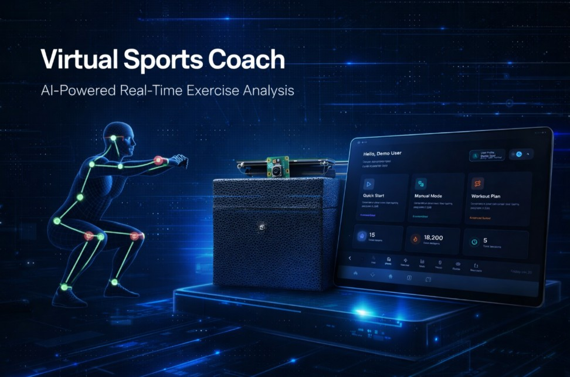
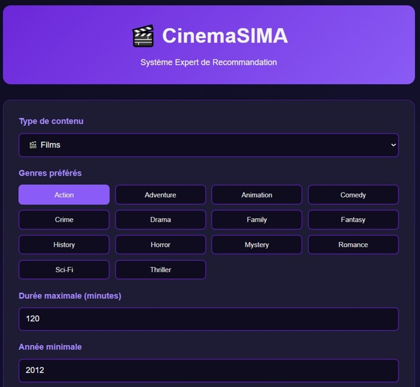
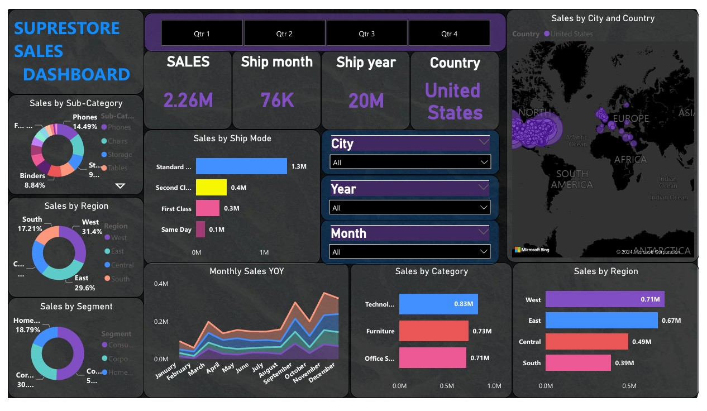
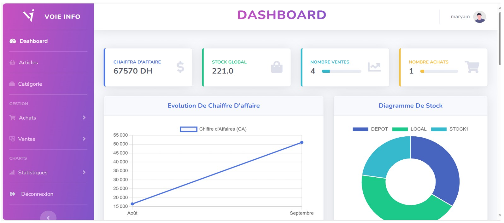
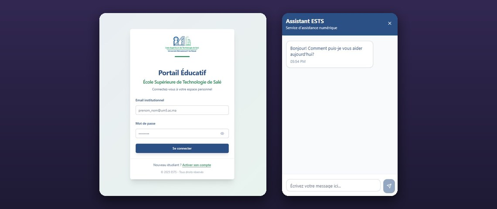
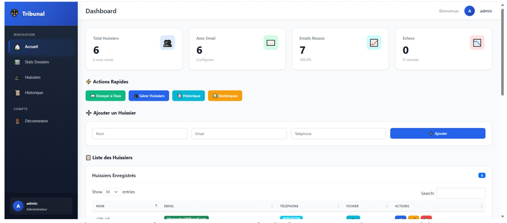

Machine Learning
Scikit-learn, classification, modèles prédictifs, feature engineering, Random Forest, systèmes de recommandation.
PORTFOLIO · 2026 / 2027
Je suis Salma Bakraoui, étudiante en deuxième année de Master Intelligence Artificielle. Je m'intéresse au Machine Learning, au Deep Learning et à la conception de solutions intelligentes fondées sur les données.
AI · MACHINE LEARNING · DATA
01 / À PROPOS
Mon parcours relie les statistiques, la Business Intelligence, le Big Data et l'Intelligence Artificielle.
Actuellement en deuxième année de Master Intelligence Artificielle à la Faculté des Sciences Semlalia de l'Université Cadi Ayyad, je développe mes compétences à travers des projets de modélisation, d'analyse de données et de développement d'applications intelligentes.
Je recherche un stage de fin d'études à partir du 1er février 2027, en Intelligence Artificielle / Machine Learning ou en Big Data / Data Science.
02 / COMPÉTENCES
Scikit-learn, classification, modèles prédictifs, feature engineering, Random Forest, systèmes de recommandation.
PyTorch, CNN, LSTM, NLP, Transformers, LLM, fine-tuning et prompt engineering.
Python, SQL, NoSQL, Pandas, NumPy, ETL, pipelines, EDA, statistiques et data mining.
GitHub Actions, Pytest, versioning, monitoring, Flask, FastAPI, API REST, Docker et Git.
OpenCV, classification d'images, Power BI, tableaux de bord et visualisation de données.
Git, GitHub, n8n, plateformes cloud, notions DevOps et conteneurisation.
Compétences issues de mon parcours et de mes projets.
03 / SÉLECTION DE PROJETS
Une sélection de travaux en développement, analyse de données et intelligence artificielle.

PROJET IA · DEEP LEARNINGProjet d'analyse des mouvements sportifs par estimation de pose et angles articulaires. Le travail porte sur cinq exercices et l'utilisation de modèles LSTM sous PyTorch pour évaluer la qualité d'exécution, avec une interface TypeScript et une approche Edge AI.

APPLICATION · RECOMMANDATIONInterface d'un système expert de recommandation de films, avec critères de recherche et préférences de genres.

DATA ANALYTICSProjet de prévision des ventes pour une petite entreprise. Le visuel présente un tableau de bord analytique avec indicateurs de ventes, répartitions et tendances.

APPLICATION WEBApplication de gestion des produits, des transactions et des utilisateurs, avec un tableau de bord de suivi des indicateurs de stock et de chiffre d'affaires.
Aide à la décision à partir de données environnementales multi-sources, avec pipeline de traitement et d'alertes en temps réel et application Flask.
Pipeline NLP combinant transcription vocale et extraction des aliments, quantités et unités à partir de descriptions en français et en darija, avec comparaison de spaCy et de LLM.

ENT · CLOUD & IAPlateforme cloud centralisant les services et données académiques de l'École Supérieure de Technologie de Salé : portail éducatif avec connexion par email institutionnel, base NoSQL et assistant conversationnel basé sur un modèle de langage.

AUTOMATISATION · WORKFLOWApplication web d'automatisation intelligente des échanges et du suivi au sein d'un service d'huissiers de justice. Le projet comprend un tableau de bord de gestion et un workflow d'automatisation.
Voir aussi le workflow ↗04 / EXPÉRIENCES
Analyse du processus de traitement des dossiers d'import/export et conception d'une solution de Machine Learning visant à prédire la confirmation des dossiers à partir de l'historique documentaire.
Traitement et structuration de données opérationnelles pour l'analyse des coûts, puis conception de tableaux de bord Power BI pour le suivi des indicateurs.
Développement d'une application de gestion des stocks, des produits, des transactions et des utilisateurs.
05 / FORMATION
Faculté des Sciences Semlalia
Université Cadi Ayyad · Marrakech
École Supérieure de Technologie de Salé
École Supérieure de Technologie de Fkih Ben Salah
Lycée Al Alia · Mohammedia
06 / EN PLUS
J'aime apprendre, explorer de nouveaux outils et découvrir comment la technologie peut répondre à des besoins concrets.
07 / CONTACT
Je suis à la recherche d'un stage PFE à partir de février 2027. Échangeons autour de vos projets en IA et Data.
salmabakraoui65@gmail.com ↗